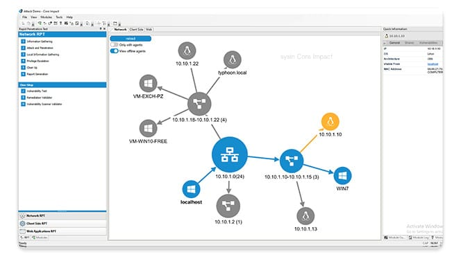

请访问原文链接：Core Impact 21.5 (Windows) - 高级渗透测试 查看最新版。原创作品，转载请保留出处。
作者主页：sysin.org
Core Impact
渗透测试软件，安全地发现和利用安全漏洞
Core Impact 旨在使安全团队能够轻松进行高级渗透测试。借助引导式自动化和经过认证的漏洞利用，这款功能强大的渗透测试软件使您能够使用与当今攻击者相同的技术来安全地测试您的环境。
跨网络基础设施、端点、Web 和应用程序复制攻击 (sysin)，以揭示被利用的漏洞，使您能够立即修复风险。
主要特征
引导式自动化
Core Impact 的快速渗透测试 (RPT) 是可访问的自动化工具，旨在自动执行常见和重复性任务。这些高级测试通过简化流程、最大限度地提高效率并使笔测试人员能够专注于更复杂的问题，帮助优化安全资源的使用。
经认证的漏洞
利用我们专业编写和验证的 漏洞利用库 来实现实际测试功能。这个稳定的商业级漏洞库可以实时更新新的渗透测试漏洞和其他可用平台的测试，包括来自 ExCraft 的第三方漏洞。
专利代理
Core Impact 的专利 核心代理 简化了与远程主机的交互 (sysin)。您可以告诉 Core Impact 您想对远程主机执行什么操作，代理将负责技术方面的工作。
强大的错误预防
为不同级别（产品、工作区、模块/RPT）的代理启用可编程自毁功能。这意味着在测试后不会留下任何代理来耗尽资源或被攻击者用作潜在的后门。
组队
多个安全测试人员能够在同一会话中进行交互，使团队能够安全地共享数据和委派测试任务。这些共享工作区提供了已发现和受损网络目标的通用视图，以实现最佳协作。
报告
自动报告功能可实现一致、彻底的记录，可用于规划修复工作并确定修复工作的优先级，并证明 PCI DSS 、GDPR 和 HIPAA 等法规的合规性。
报告还具有添加 MITRE ATT&CK™ 框架的层输出的选项，该框架是一个已知攻击战术和技术的矩阵，可以帮助对攻击进行分类并进一步确定风险的优先级。
可视化
Core Impact 的攻击地图是您参与情况的实时图形概述，可帮助您更好地确定测试过程的后续步骤。除了显示攻击链、旋转和其他活动之外，该动态地图还具有完全交互性 (sysin)，可提供可视化工作空间。

自动重新测试和修复验证
执行测试后，只需按一下按钮即可重新测试。无需额外设置、重新测试修复并验证是否已应用安全补丁或其他补偿控制措施并已纠正安全漏洞。
产品规格
可监测的平台
Core Impact 在 Windows 上运行，可帮助您测试以下类型的平台：
- Windows、Linux 和 Mac 等操作系统
- 云（公共云、私有云、混合云）
- 数据库
- 网页服务
- 网络设备
- 软件应用
- 您的关键数据
集成
为了进一步集中您的测试环境并增加计划的广度，Core Impact 与其他安全测试工具集成，包括：
- Cobalt Strike
- Metasploit
- PowerShell Empire
- Plextrac
漏洞扫描器集成
Core Impact 可以从多个扫描仪导入数据并验证漏洞，包括：
- beSECURE
- Burp Suite
- Fortra VM
- Nessus (sysin)
- Nexpose
- OpenVAS
- Nmap
- Qualys
- SAINT
- Tenable
部署选项
Core Impact 在 Windows 上运行，具有集成的 SQL 数据库，支持物理或虚拟系统。
产品捆绑方案
Core Impact 可以与其他攻击性安全解决方案捆绑在一起，以便您可以使用集中式、可互操作的工具来加速安全性。打造适合您组织的独特需求的安全技术堆栈 - 一切都以折扣价进行。
Core Impact 常见问题解答
1、Core Impact 有何用途
Core Impact 自动化日常测试，帮助您的组织更有效地利用其网络安全资源。预定的自动测试可以让您的网络安全团队专注于更复杂、更深入的安全计划。
使用 Core Impact 的勒索软件模拟器和动态网络钓鱼功能来衡量安全意识。找出哪些关键数据面临风险以及哪些员工容易受到攻击。
当与 Frontline VM 等漏洞管理解决方案结合使用时，Core Impact 可验证并帮助确定最高安全漏洞风险的优先级以进行修复。
通过重新测试验证补救措施。确保缺陷得到纠正并且系统控制在修复后正常工作。
2、谁可以使用 Core Impact
任何经验水平的安全团队都可以使用 Core Impact。高级用户可以自动化测试并腾出时间来进行更多实际的、复杂的测试。新用户可以利用直观的设置快速启动并运行安全测试程序。
3、 Core Impact 和 Cobalt Strike 有什么区别
Core Impact 和 Cobalt Strike 可以很好地配合使用，但也有不同的用途。
Cobalt Strike 是红队用来模拟现实世界攻击的工具。Cobalt Strike 不仅仅是渗透测试，它还模拟网络中长期嵌入的威胁参与者。
Core Impact 是评估安全漏洞的渗透测试。该工具观察并报告安全措施中可能被恶意行为者用来访问敏感数据的不安全路径。红队也可以将其用作模拟攻击武器库的一部分。
4、什么是 Core Impact exploit
Core Impact exploits 是由值得信赖的专家编写的商业级、经过验证的漏洞。这些库是专门创建和验证的，以确保使用的安全性和有效性。更新不会有任何延迟 (sysin)，也不会从头开始。Core Impact 研究人员使这些库保持最新状态，并使用细致的审查流程来确保外部实体不会篡改库以获取恶意收益。
Core Impact 不使用开源漏洞利用库。开源漏洞利用库可以由公众编写、发布供公众使用，并分发给任何人和每个人使用，因此可能不安全或未经过验证。
5、Core Impact 的价格是多少
Core Impact 本身根据用户和功能进行分级定价。从基本、专业和企业级别的覆盖范围中进行选择：
- Core Impact Basic 的 价格为每年 9,450 美元，拥有让您的渗透测试计划与自动化网络测试相结合所需的一切。
- Core Impact Pro 的 价格为每年 12,600 美元，可通过网络和客户端测试功能帮助扩展您的渗透计划。
- Core Impact Enterprise 定价基于组织规模，并包含 Core Impact 的全部功能，包括自动化网络、客户端、Web 应用程序和移动测试。
Core Impact 还可以与其他进攻性安全选项结合使用，但价格较低。
Advanced Bundle
Core Impact 和 Cobalt Strike 一起通过提供笔测试和红队对手模拟来帮助组织评估其安全弱点。两者都使团队能够执行有价值的安全测试，以识别弱点和有风险的数据。
Essentials Bundle
核心影响和一线漏洞管理这两种安全工具可以很好地协同工作，评估业务关键网络和组织基础设施的网络安全漏洞。这种组合可以很好地协同工作，通过将漏洞管理器的扫描和检测与渗透测试利用这些漏洞的能力相结合，帮助确定哪些漏洞是可利用的。
Elite Bundle
Core Impact、Cobalt Strike 和 Frontline Vulnerability Management 同步工作，创建一个全面的安全组合，用于评估、识别漏洞及其潜在影响并确定其优先级。他们都有相同的目标，主动评估风险，每个人都有不同的漏洞测试和管理职位。
6、Core Impact 是自动化渗透测试吗
Core Impact 利用快速渗透测试。此自动化笔测试包括涵盖网络、客户端测试和 Web 应用程序测试的向量。一步式网络和 Web 应用程序渗透测试通过单个步骤完成测试，然后提供详细的报告。
7、什么是 Core Impact 勒索软件模拟器
使用自动化的快速笔测试并包括网络钓鱼活动，Core Impact 可以有效地模拟勒索软件攻击。安全团队可以模仿多种类型勒索软件的勒索软件行为。可以选择将安全环境恢复到模拟攻击之前的原始状态 (sysin)。加密文件行程还使防御团队有机会检测并采取对策来对抗模拟攻击。该模拟器甚至能够留下勒索字条，因此安全团队可以对勒索软件从头到尾的行为进行培训。
8、Core Impact 支持哪些合规法规
渗透测试是遵守合规性和监管标准的必要组成部分。Core Impact 有助于保护敏感数据并遵守这些指令。使用自动化渗透测试，组织可以安排定期测试，无论是标准的简单测试还是更复杂的深入测试，然后生成用于审计目的的详细报告。这些方法符合大多数行业标准，例如 PCI 、 CMMC 、 NIST 等。
9、漏洞扫描和渗透测试有什么区别
漏洞扫描器可以发现网络安全系统中的数千个弱点。漏洞扫描器搜索可被网络攻击者利用的潜在安全弱点。渗透测试可以测试这些可能的漏洞点，看看它们是否可以被利用。
Core Impact 可以与最流行的漏洞扫描程序集成，包括 Frontline VM。他们共同确定高风险漏洞的优先级，测试哪些漏洞是可行的，生成详细的修复报告，并自动重新测试以确保修复工作成功。
准备好开始使用 Core Impact 了吗？
访问 sysin.org，了解 Core Impact 所提供的功能，并开始下载试用吧。
系统要求
You can run Core Impact on any Windows system with the following minimum specifications:
- Intel Core 2 Duo, 2.8 GHz
- 4GB RAM minimum (8GB RAM recommended)
- 4GB free hard disk space (space requirements increase with the quantity of workspaces)
- A Windows-compatible Ethernet networking card. Core Impact works with wireless network interface cards
- Internet Explorer 9.0 or later (sysin)
- Screen resolution: 1024 x 768 minimum (1280 x 1024 recommended)
Core Impact runs on Windows with an integrated SQL database, physical or virtual system. Core Impact can be installed and running in 30 minutes or less.
下载地址
Core Impact 21.5 for Windows, Feb 2024
百度网盘链接：https://pan.baidu.com/s/1L4xcZmNSBSxno2QytEODvw?pwd= <专享>
更多：HTTP 协议与安全

文章用于推荐和分享优秀的软件产品及其相关技术，所有软件默认提供官方原版（免费版或试用版），免费分享。对于部分产品笔者加入了自己的理解和分析，方便学习和研究使用。任何内容若侵犯了您的版权，请联系作者删除。如果您喜欢这篇文章或者觉得它对您有所帮助，或者发现有不当之处，欢迎您发表评论，也欢迎您分享这个网站，或者赞赏一下作者，谢谢！
 支付宝赞赏
支付宝赞赏
 微信赞赏
微信赞赏
赞赏一下